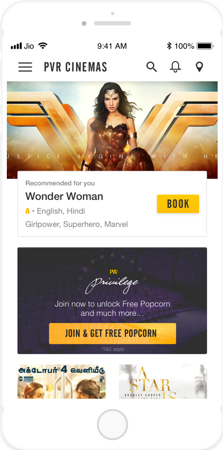
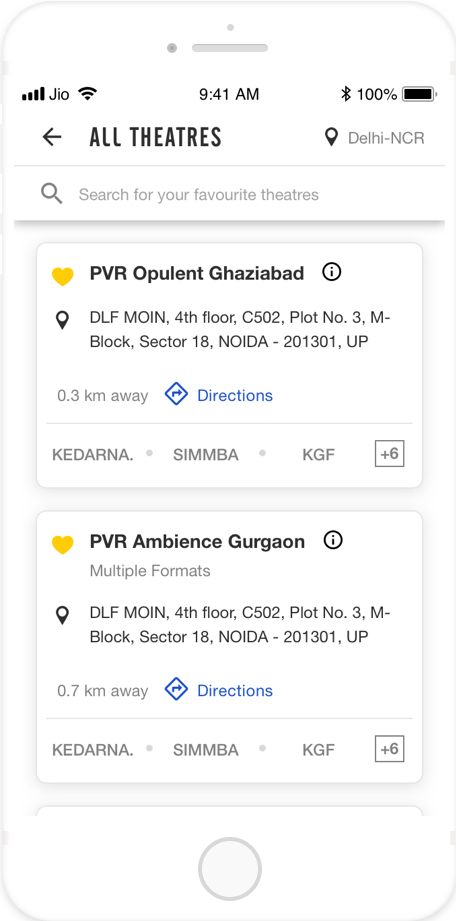

Created design guidelines for PVR Cinemas App
PVR Cinemas Design Guidelines
Dec 2018 - Feb 2019
At PVR Cinemas, I helped them create design guidelines for their mobile app to ensure that the design is consistent, efficient, scalable and reusable. The project spanned from December 2018 to February 2019.
The problem statement
PVR Cinemas has an array of different digital products that needed a consistent design language. The challenge was to make sure that the design guidelines we created can be applied to all these platforms so that we can maintain a consistent brand identity and express the brand properly.
While the goal of the design and development teams in the initial stages of the project was to get features out as quickly as possible, test them and reiterate on them, it was getting very hard to maintain consistency and efficiency in the new features being shipped out. It was also increasingly hard to maintain the design consistency and familiarity of design patterns used within the app across multiple design and development teams.
To solve this problem, we set out to create design guidelines based on the principles and patterns we had used throughout the app. Apart from the usual breaking up designs into components, we also decided to document our design decisions like: Why were labels kept short? Why were error messages set in passive voice?
“Design adds value faster than it adds costs.”
- Joel Spolsky
The Aim
Aim of the design guidelines
Our design team had worked hard on a unified design vision for our products. What we hadn’t worked out was how we’d be able to communicate all the decisions we’d made to the wider company for implementation across our product suite.
We searched for similar situations in other companies and came up almost empty handed. Of course, frameworks like Bootstrap, Zurb foundation, and Ratchet, were already out there and very popular. Our problem wasn’t that we needed a UI framework, since we already had one of our own, but that we needed a method to communicate the design transition within Atlassian.
The objectives of developing a design system were following:
Typography
When I set out to create the typography guidelines, the PVR app was using 12 type styles across the app, I limited the number of type styles to 6.
Color Schemes
On the PVR app, we used color to create visual patterns that effectively and predicatably communicate affordances and visual heirarchy to the users. My job was to look at the use of color throughout the app, streamline it, resolve the conflicts if any and quickly create the guidelines on the use of color that can help as suggestions for designers under a certain context.
Primary and Secondary Colors
On the PVR app, we used color to create visual patterns that effectively and predicatably communicate affordances and visual heirarchy to the users. My job was to look at the use of color throughout the app, streamline it, resolve the conflicts if any and quickly create the guidelines on the use of color that can help as suggestions for designers under a certain context.
Spacing
On the PVR app, we used color to create visual patterns that effectively and predicatably communicate affordances and visual heirarchy to the users. My job was to look at the use of color throughout the app, streamline it, resolve the conflicts if any and quickly create the guidelines on the use of color that can help as suggestions for designers under a certain context.
QR Code Guidelines
On the PVR app, we used color to create visual patterns that effectively and predicatably communicate affordances and visual heirarchy to the users. My job was to look at the use of color throughout the app, streamline it, resolve the conflicts if any and quickly create the guidelines on the use of color that can help as suggestions for designers under a certain context.
Header Bar Guidelines
On the PVR app, we used color to create visual patterns that effectively and predicatably communicate affordances and visual heirarchy to the users. My job was to look at the use of color throughout the app, streamline it, resolve the conflicts if any and quickly create the guidelines on the use of color that can help as suggestions for designers under a certain context.
Implementation of Header Bar Guidelines
On the PVR app, we used color to create visual patterns that effectively and predicatably communicate affordances and visual heirarchy to the users. My job was to look at the use of color throughout the app, streamline it, resolve the conflicts if any and quickly create the guidelines on the use of color that can help as suggestions for designers under a certain context.



Implementation of Header Bars
The Result
Results of implementing the design system
The Implementation
Implementation of the design system